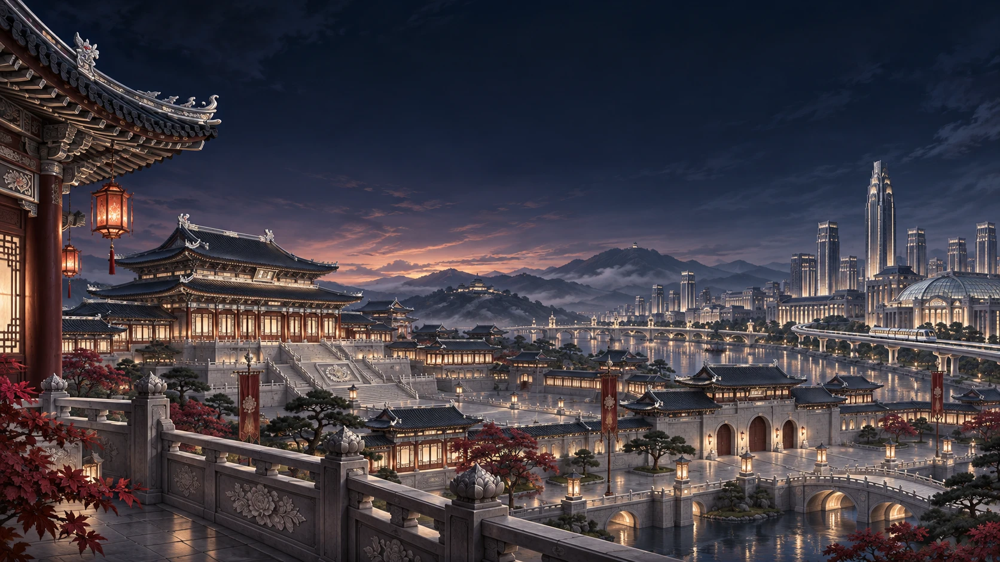
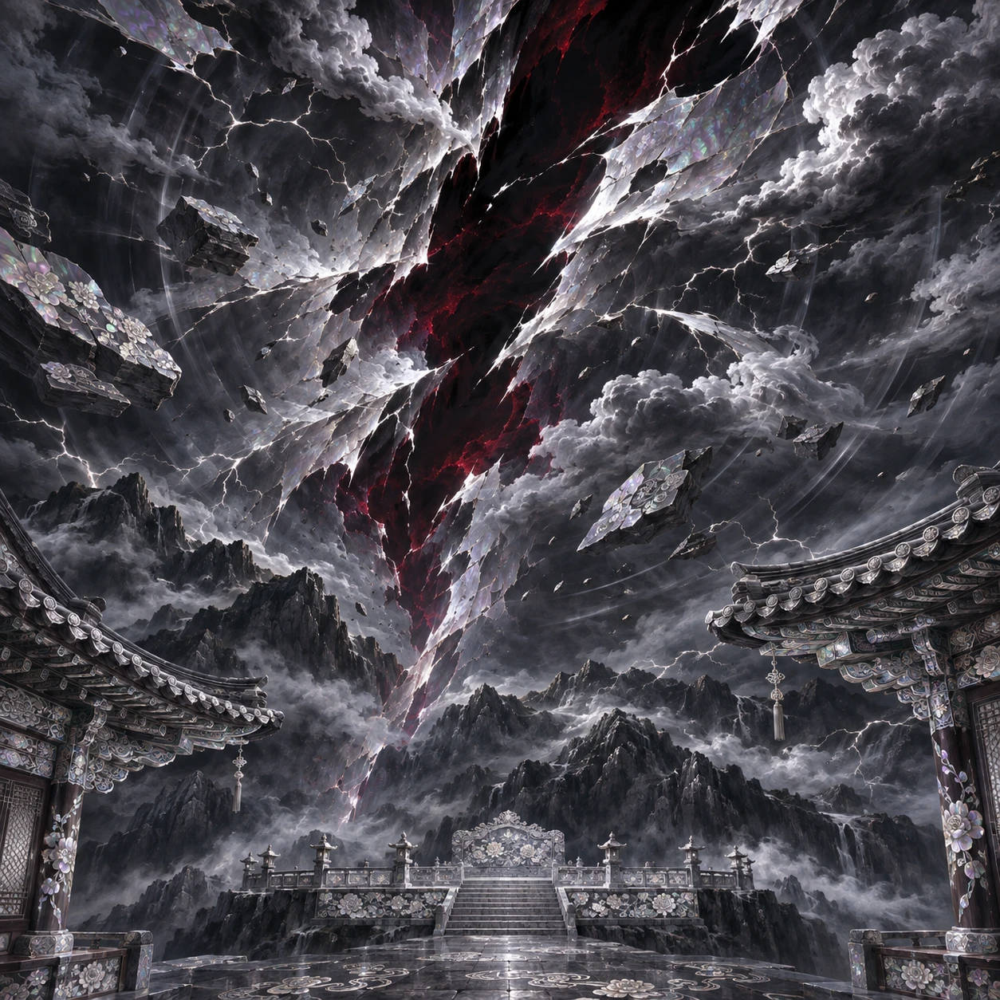

STATE & DAILY LIFE
천람 天嵐
천씨 황가가 통치하는 현대 세습 황제국. 수도 운경에는 고층 상업지구와 궁궐, 현대식 주거단지와 귀족 저택이 공존한다. 스마트폰·인터넷·고속철도·현대 의료가 보편적이다.
- 수도
- 운경 雲京
- 황궁
- 경운궁 景雲宮
- 국시
- 호국안민 護國安民
- 화폐
- 환 圜 · 1환 = 100전
다섯 명의 천급, 하나의 전선.
갈라진 하늘 아래, 함께 돌아올 이름.

THE EMPIRE OF CHEONRAM
오래된 황권 위에,
새로운 세계가 선다.
IMPERIAL SPECIAL OPERATIONS
천람 전체에 약 열두 명뿐인 천급 각성자.
그중 다섯 명이 모인, 천무의 예외적인 전력.
네 명의 천위와 한 명의 천율.
대재급 이상의 균열과 고위험 임무를 맡는다.
인물의 초상 또는 문장을 누르면 개인 기록이 열립니다.
같이 들어갔다면,
같이 돌아오는 것.
A WORLD DIVIDED BY THE RIFT
현대의 일상과 황실의 질서,
그 사이에 열린 균열.

균열의 기원
탐욕·증오·폭력·배신이 쌓여 세계의 균형이 무너졌다. 찢어진 하늘에서는 악업이 형체를 얻은 흉수가 나타났다. 수호 의지·희생·연민·희망은 그에 맞설 힘, 천위와 천율의 각성으로 발현됐다.
STATE & DAILY LIFE
천씨 황가가 통치하는 현대 세습 황제국. 수도 운경에는 고층 상업지구와 궁궐, 현대식 주거단지와 귀족 저택이 공존한다. 스마트폰·인터넷·고속철도·현대 의료가 보편적이다.
COMMAND & RESPONSE
황제 직속 각성자 관리·균열 대응기관. 총관과 부총관이 기관을 운영하며 황제가 최고 통수권을 가진다. 다른 황족의 작전 관여에는 공식 위임이나 황명 전달이 필요하다.
관측국균열 관측 · 분석 · 출동 경보
작전국천위부 · 천율부 · 특임대
지원국의료 · 보급 · 회수 · 현장 수습
PRIVILEGE & OBLIGATION
각성자에게는 높은 신분과 부·명예·특권이 주어진다. 그 대가로 요구되는 것은 국가와 황실에 대한 충성이다. 각성의 유전은 입증되지 않았고, 평범한 가문에서도 천급이 탄생한다.
THREE DISTINCT CLASSIFICATIONS
균열의 위험, 흉수의 위험,
각성자의 능력 등급은 서로 다른 기준이다.
RIFT CLASSIFICATION
균열 전체의 위험을 판정한다.
관측국 판정 후 작전국이 전력을 파견한다. 특임대는 대재급 이상과 고위험 임무에 투입되며, 흉수 토벌 뒤 균열을 봉인한다.
BEAST CLASSIFICATION
개체의 전투 위험·특수 능력·피해 범위를 평가한다.
흉수 개체의 위험 등급은 균열 등급과 반드시 일치하지 않는다. 토벌 뒤에는 경제적으로 활용 가능한 부산물이 남을 수 있다.
AWAKENED CLASSIFICATION
각성 당시 결정되는 선천적 재능.
훈련으로 오르는 것은 숙련도와 제어 능력이다. 등급 자체는 오르지 않는다. 천율의 등급은 가이딩 능력으로 판정하며, 천랑 정식 특임대원은 현급 이상으로 구성된다.
SENTINEL & GUIDE
천급 천위 한 명은 도시 하나를 궤멸시킬 수준의 파괴력을 지닌다. 천급 천율 한 명은 그 천위가 방출하는 에너지 파동을 1:1로 상쇄할 출력량을 지닌다.
현급 천율은 천급 천위의 에너지량을 같은 방식으로 1:1 상쇄할 수 없다. 동급 천율의 출력은 동급 천위 한 명의 최대 출력과 균형을 이루며, 여러 천위를 동시에 가이딩하면 상쇄력은 대상에게 분산된다.
CHEONRAM ARCHIVES
책등을 누르면 천람의 기록이 펼쳐집니다.